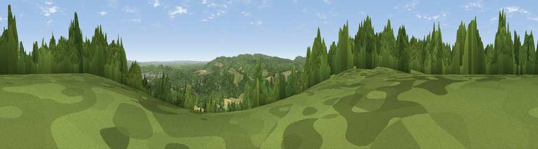

Viewpoint near Westcott
#21989 in England · top 18% of its area beats it · near WestcottThe view, rendered

A 360° render of this exact spot computed from the terrain model, tree cover and land cover — summer colours, afternoon light, calibrated against photographs of famous viewpoints. Real trees, hedges and buildings will differ in detail.
The panorama
Grey silhouette: terrain skyline in each direction (720 bearings, Earth curvature and refraction included). Dashed green: skyline with trees (+15 m) and buildings (+8 m) as obstacles. Blue strip: how far the ground is visible on each bearing.
Where the view opens
Wedge length = distance to the farthest visible ground on that bearing (vegetation-aware). Rings at 10, 25 and 50 km.
What fills the view
53% woodland · 24% cropland · 21% grassland · 2% built-up
Angular shares of the visible panorama (visual magnitude), not map area. Landscape diversity 0.47 (0–1 Shannon).
Key numbers
More beautiful places nearby
The staircase of upgrades: each row has a higher view potential than everything closer. Driving times are estimates from straight-line distance, calibrated against real road routing — check an actual route before setting out.
| Place | Direction | Drive | Score |
|---|---|---|---|
| Viewpoint near Westcott | ENE · 1 km | ~4 min | 51.7 |
| Viewpoint near Dorking | E · 2 km | ~6 min | 55.9 |
| Viewpoint near Coldharbour | SSE · 6 km | ~13 min | 56.5 |
| Viewpoint near Box Hill Village | E · 7 km | ~14 min | 68.1 |
| Viewpoint near Coldharbour | SSE · 7 km | ~14 min | 71.3 |
| Viewpoint near Fernhurst | SW · 29 km | ~46 min | 75.1 |
| Viewpoint near Storrington | S · 38 km | ~57 min | 83.9 |
| Chanctonbury Ring | S · 38 km | ~57 min | 87.0 |
51.23690, -0.38453 · source: screening · position refined by local search. Computed location — check access rights before visiting.